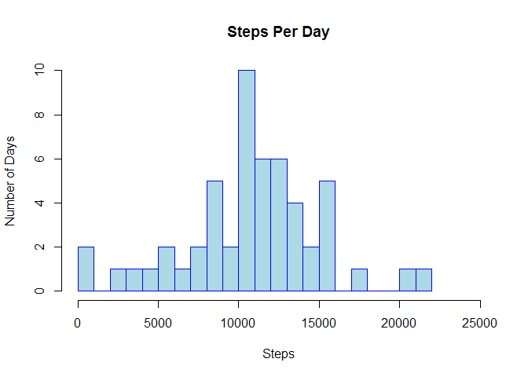
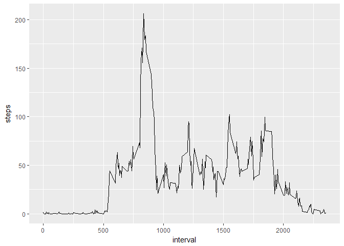
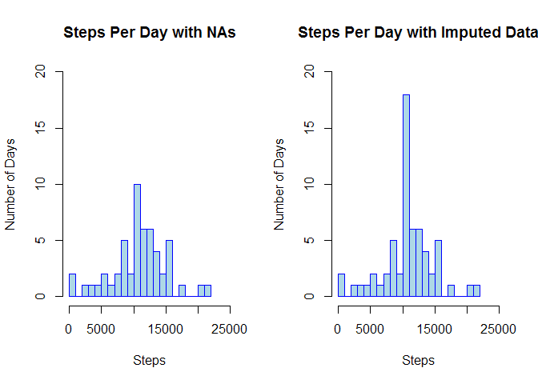
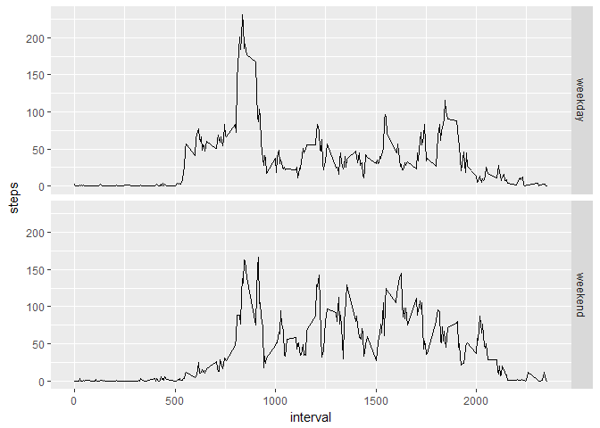

Assuming that the activity.csv file exists within the working directory, we can load the data as follows:
activity <- read.csv("activity.csv")What does the data looks like?
str(activity)## 'data.frame': 17568 obs. of 3 variables:
## $ steps : int NA NA NA NA NA NA NA NA NA NA ...
## $ date : Factor w/ 61 levels "2012-10-01","2012-10-02",..: 1 1 1 1 1 1 1 1 1 1 ...
## $ interval: int 0 5 10 15 20 25 30 35 40 45 ...Let’s convert the dates from factor to date class.
activity$date <- as.Date(activity$date, format = "%Y-%m-%d")Okay, our data should be ready for analysis.
str(activity)## 'data.frame': 17568 obs. of 3 variables:
## $ steps : int NA NA NA NA NA NA NA NA NA NA ...
## $ date : Date, format: "2012-10-01" "2012-10-01" ...
## $ interval: int 0 5 10 15 20 25 30 35 40 45 ...Looks good. There are some NAs, but we’ll ignore them for now.
First, let’s calculate the total number of steps taken each day.
df1 <- aggregate(steps ~ date, data = activity, sum)
head(df1)## date steps
## 1 2012-10-02 126
## 2 2012-10-03 11352
## 3 2012-10-04 12116
## 4 2012-10-05 13294
## 5 2012-10-06 15420
## 6 2012-10-07 11015Next, let’s plot this as a histogram to get a feel for the distribution of the data.
hist(df1$steps,
main = "Steps Per Day",
xlab = "Steps",
ylab = "Number of Days",
border = "blue",
col = "lightblue",
xlim = c(0,25000),
breaks = 24)
Based on the histogram, it looks like the most common total per day step count is between 10,000 and 11,000. Let’s see what the mean and median values work out to exactly.
mean(df1$steps)## [1] 10766.19median(df1$steps)## [1] 10765First, let’s figure out the average number of steps taken for each time interval across all days.
df2 <- aggregate(steps ~ interval, data = activity, mean)To make sure this worked, let’s look at a section of the data, specifically, the average values for 7-8 AM.
df2[85:97,]## interval steps
## 85 700 43.81132
## 86 705 44.37736
## 87 710 50.50943
## 88 715 54.50943
## 89 720 49.92453
## 90 725 50.98113
## 91 730 55.67925
## 92 735 44.32075
## 93 740 52.26415
## 94 745 69.54717
## 95 750 57.84906
## 96 755 56.15094
## 97 800 73.37736It seems to look okay. Let’s try making this data into a time series plot using ggplot2.
library(ggplot2)
p2 <- ggplot(df2, aes(interval, steps)) +
geom_line()
print(p2)
So which 5-minute interval contains, on average, the maximum number of steps?
head(df2[order(df2$steps,decreasing=T),])## interval steps
## 104 835 206.1698
## 105 840 195.9245
## 107 850 183.3962
## 106 845 179.5660
## 103 830 177.3019
## 101 820 171.1509Looks like it’s the 835 interval, which seems to match what we saw in our time series plot above.
How many of the rows in the dataset contain NA values?
totalna <- sum(!(complete.cases(activity)))
totalna## [1] 2304So 2304 rows. For interest’s sake, let’s check what percentage of the values that represents.
totalna/nrow(activity)*100## [1] 13.1147513.1 percent. Let’s impute the missing values to see if that will substantially change the results of previous analyses. The method we’ll use is to replace NA values with the mean value, across all days, for that same time interval. The mean value will be taken from the df2 data frame, created earlier, which contains all the intervals and the mean steps value for each.
activity2 <- activity
activity2$steps[is.na(activity2$steps)] <- df2$steps[match(activity2$interval,
df2$interval)]## Warning in activity2$steps[is.na(activity2$steps)] <-
## df2$steps[match(activity2$interval, : number of items to replace is not a
## multiple of replacement lengthDespite the warning, the code accomplished what it needed to do. Earlier when we ran str against the activity data frame, the first steps values were all NAs. Let’s check now.
str(activity2)## 'data.frame': 17568 obs. of 3 variables:
## $ steps : num 1.717 0.3396 0.1321 0.1509 0.0755 ...
## $ date : Date, format: "2012-10-01" "2012-10-01" ...
## $ interval: int 0 5 10 15 20 25 30 35 40 45 ...It seems the replacement of NA values worked. Let’s double-check to make sure there are no NAs left in the data set.
sum(!(complete.cases(activity2)))## [1] 0Good, none left. Now we’ll generate our histogram again and see if there is any difference. First we’ll again calculate the total number of steps each day.
df3 <- aggregate(steps ~ date, data = activity2, sum)Now let’s re-generate our original histogram and plot the new data as a second histogram for comparison.
par(mfrow=c(1,2))
# Histogram based on original data
hist1 <- hist(df1$steps,
main = "Steps Per Day with NAs",
xlab = "Steps",
ylab = "Number of Days",
border = "blue",
col = "lightblue",
xlim = c(0,25000),
ylim = c(0,20),
breaks = 24)
# Histogram based on dataset with imputed data
hist(df3$steps,
main = "Steps Per Day with Imputed Data",
xlab = "Steps",
ylab = "Number of Days",
border = "blue",
col = "lightblue",
xlim = c(0,25000),
ylim = c(0,20),
breaks = 24)
So not much changed, except the number of days with 10000-11000 steps has increased significantly. Why is that?
Well let’s look at the mean and median values. Here is a comparison of the mean and median for the dataset including NAs, and our new dataset with imputed data.
a <- mean(df1$steps)
b <- median(df1$steps)
c <- mean(df3$steps)
d <- median(df3$steps)
df4 <- data.frame(c(a,b), c(c,d))
rownames(df4) <- c("mean", "median")
colnames(df4) <- c("Includes.NAs", "Imputed.Data")
df4## Includes.NAs Imputed.Data
## mean 10766.19 10766.19
## median 10765.00 10766.19Wait, how come the mean and median ended up the same when we used imputed data? Well, the original data had eight days with no observations. Every interval for those days was filled with the same imputed data, that is, the mean for each interval, and therefore all those days ended up having the same total number of steps–10766.19 steps, to be exact.
This also explains why the number of days with step counts between 10,000 and 11,000 increased signifantly in our new histogram.
Let’s create a new factor variable that identifies whether a particular observation occurred on a weekday or weekend.
activity2$day <- weekdays(activity2$date)
activity2$day <- gsub("S(atur|un)day", "weekend", activity2$day)
activity2$day <- gsub("(Mon|Tues|Wednes|Thurs|Fri)day", "weekday",
activity2$day)Now let’s aggregate this data to get the average steps per interval on weekdays and weekends.
df5 <- aggregate(steps ~ interval + day, data = activity2, mean)Finally, we’ll visualize this data using a time series plot.
p4 <- ggplot(df5, aes(interval, steps)) +
geom_line()
p4 + facet_grid(day ~ .)
So a couple interesting differences are apparent. As might be expected, there seems to be less activity in the early morning on weekends. Also, from mid-morning to afternoon, the subject appears to be more active on weekends than on weekdays.